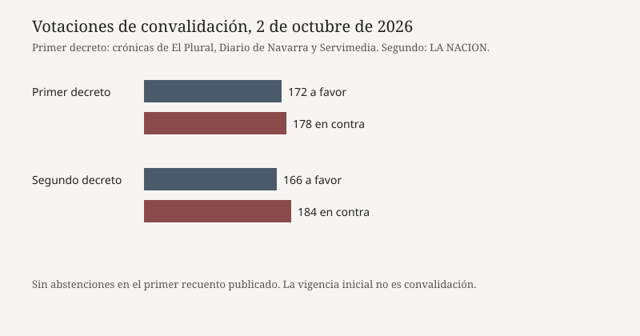

Madrid · vivienda · 2 de octubre de 2026
El Congreso no convalidó los dos reales decretos-ley de vivienda

Lo que coinciden las redacciones
El viernes 2 de octubre de 2026 el Pleno del Congreso rechazó la convalidación de los dos reales decretos-ley de vivienda aprobados por el Consejo de Ministros el martes 29 de septiembre. El primero, el más amplio, obtuvo 172 votos a favor y 178 en contra, sin abstenciones, según El Plural, Diario de Navarra y Servimedia. En contra votaron PP, Vox, Junts y UPN. A favor, según Diario de Navarra, votaron PSOE, Sumar, ERC, Bildu, PNV, Podemos, BNG, Coalición Canaria y Compromís. El segundo decreto, de estabilidad de los arrendamientos de vivienda habitual, cayó por 166 votos a favor y 184 en contra, cifra que publicó LA NACION el mismo día. La votación fue pública y por llamamiento, a petición de PSOE y Sumar: cada diputado se puso en pie y dijo el voto.
El primer texto había entrado en vigor a las cero horas del jueves. Diario de Navarra calculó una vigencia de poco más de veinticuatro horas. Al decaer la convalidación, las medidas dejan de aplicarse y vuelve el marco anterior. Entre lo descrito por las crónicas del primer decreto: suspensión o mayor protección frente a desahucios de personas vulnerables sin alternativa habitacional, prórroga de contratos de alquiler que vencen este año, límite a compras consideradas especulativas, reglas más duras para alquileres de temporada y por habitaciones, incentivos fiscales a rentas asequibles, financiación al 0 por ciento para la primera vivienda y un IVA del 4 por ciento para vivienda protegida. El segundo decreto era el de prórroga de los contratos de vivienda habitual. Esa lista es el contenido anunciado, no un texto consolidado reproducido aquí artículo por artículo.
El origen político del paquete es el desalojo, el 23 de septiembre en Madrid, de una mujer de 87 años que usa silla de ruedas, identificada en la prensa como Maricarmen. La Moncloa tenía en la agenda del 2 de octubre la defensa de los reales decretos-ley 26/2026 y 27/2026, de 29 de septiembre. Isabel Rodríguez, ministra de Vivienda, pidió en el debate que Junts se moviera a la abstención. Junts había anunciado el voto negativo la noche anterior y habló de una alternativa propia.
Lo que es solo una cita
Pedro Sánchez dijo que la historia juzgará a quienes votaran en contra “antes de lo que creen y con más contundencia de lo que imaginan”. Es un argumento de votación. No es un efecto jurídico del escrutinio. Santiago Abascal y otros diputados de Vox añadieron fórmulas como “no a la traición” o “no al gobierno corrupto” al votar. Son consignas de escaño, no motivos publicados en el decreto. Juan Bravo, vicesecretario de Vivienda del PP, dijo que si se prohíbe desahuciar a personas vulnerables nadie alquilará a personas vulnerables. Es una predicción de comportamiento. Míriam Nogueras, portavoz de Junts, dijo que los decretos permiten que los fondos sigan comprando y que se siga desahuciando. Es la lectura de su grupo sobre el texto, no un informe de la Agencia Tributaria.
LA NACION escribió que el Gobierno queda al borde del precipicio y que en el gabinete se baraja un adelanto electoral, con la fecha del 29 de noviembre atribuida a elDiario.es. Eso es especulación de fuentes de Consejo de Ministros, no una convocatoria firmada. Un real decreto de disolución no se publicó el 2 de octubre en las piezas usadas aquí. Pablo Bustinduy dijo que PP, Vox y Junts defienden a los ricos. Es un juicio político del ministro, no una clasificación registral de los votos.
Mecanismo
Un real decreto-ley es una norma del Gobierno para una necesidad extraordinaria y urgente. Entra en vigor al publicarse, pero el Congreso debe convalidarlo en treinta días. Si no hay mayoría, decae. No hace falta una ley de derogación: la falta de convalidación basta. Por eso el primer decreto pudo regir unas horas y dejar de regir el mismo viernes. La convalidación no enmienda el texto. Si el Gobierno quiere incorporar lo que Junts llamó correcciones, el camino ordinario es un proyecto de ley, que es lo que la ministra ofreció según ABC en la víspera. Un proyecto se tramita, se enmienda y puede no aprobarse. No hereda la vigencia del decreto caído.
La aritmética de esta legislatura explica el resultado sin necesidad de atribuir motivos. La suma de PP, Vox, Junts y UPN superó a la del bloque que sostuvo el primer texto. El PNV, que el 1 de octubre aparecía en un sí crítico al primero y en un no al segundo, encaja con la diferencia entre 172 y 166 si se mantiene ese anuncio. Esta página no reconstruye el llamamiento diputado a diputado. La acampada de la Puerta del Sol y los cerca de 550.000 correos que laSexta atribuyó a la petición de un sí son presión exterior. No son votos.
Lo que la noticia no es
No es la derogación de la ley de vivienda de 2023 en bloque. Es la caída de dos decretos de septiembre de 2026. No es una sentencia sobre el desalojo de Maricarmen: ese procedimiento es otro órgano y otro expediente. No es la convocatoria de elecciones del 29 de noviembre. No es una medición del precio del alquiler en octubre: ninguna serie del INE citada aquí cierra con la votación. Y no es un acuerdo de investidura roto por escrito. La pérdida de dos votaciones enseña que la mayoría que aprobó los decretos en Consejo de Ministros no se repitió en el hemiciclo. El paso siguiente —proyecto de ley, nuevo decreto o disolución— no está en el resultado de las 15:28.

Artículos fuente y puntuaciones
| Medio | Titular | T | N | C |
|---|---|---|---|---|
| El Plural | En directo: el Congreso debate los decretos de vivienda con el rechazo de Junts y la presión de la acampada de Sol | 90 | -12 | 86 |
| Diario de Navarra | El Congreso rechaza el primer decreto de vivienda con el no del PP, Vox, Junts y UPN | 93 | +4 | 96 |
| Servimedia / Aragón Digital | El Congreso tumba el decreto de vivienda con los votos en contra del PP, Vox y Junts | 91 | 0 | 94 |
| LA NACION | Pedro Sánchez recibe un revés en el Congreso para su plan de vivienda y su gobierno queda al borde del precipicio | 84 | 0 | 62 |
| La Moncloa | Agenda del Gobierno — 2 de octubre de 2026 | 88 | -8 | 75 |